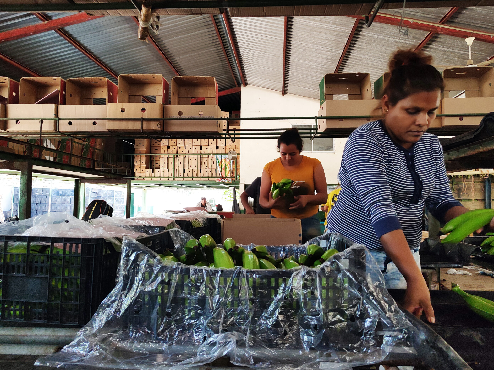
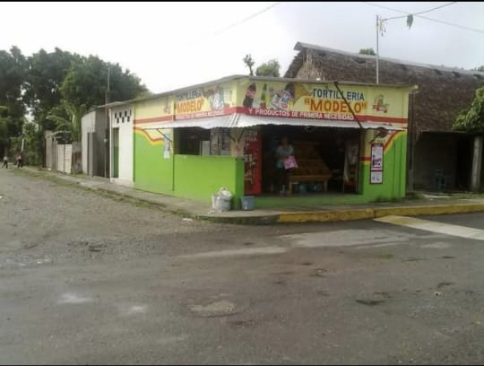
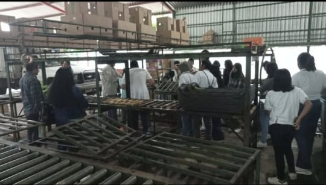

La economia de la comunidad se basa principalmente en el cultivo de platano macho y elaboración de sus derivados, como lo son los platanitos fritos y un poco de ganaderia y cultivos de maíz. El entorno natural es clave para su economía y subsistencia ya que se aprovecha mucho los recursos naturales de la región.
Así como pequeños negocios de comida, tiendas de abarrotes y empacadoras de plátano.



Imagenes de: Pagina official de Facebook "Mi Bello pueblito Santa Teresa"